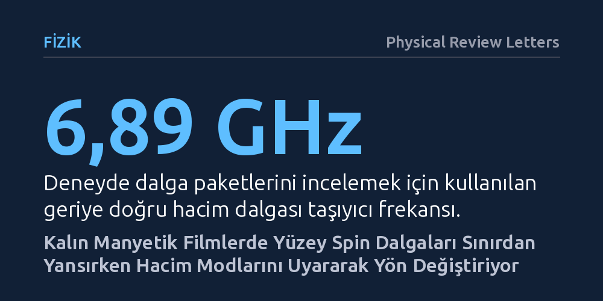

FIZIK · Physical Review Letters · 2026-10-26
Araştırmacılar, mikrometre kalınlığındaki manyetik filmlerde kiral yüzey spin dalgalarının sınırdan nasıl yansıdığını inceledi. İnce filmlerde geriye saçılması engellenen bu dalgaların, kalın filmlerde sınırdaki bölgesel hacim modlarını uyararak enerji biriktirdiği ve geri yansıdığı ortaya kondu.
Yüzey dalgalarının geriye saçılmaya karşı korunduğu yönündeki kabulün kalın manyetik malzemelerde geçerli olmadığını ve dalga enerjisinin hacimsel titreşimlere sızdığını gösteriyor.

Manyetik malzemelerde elektronların dönüş yönelimlerinin (spinlerinin) kolektif dalgalanmasıyla oluşan spin dalgaları ya da diğer adıyla magnonlar, geleneksel elektron akımının aksine elektrik yükü taşımadan enerji ve bilgi iletme potansiyeline sahiptir. Bu dalgalar arasında özel bir yere sahip olan Damon-Eshbach tipi yüzey spin dalgaları, 'kiral' adı verilen yapısal bir asimetri taşır. Bu asimetri nedeniyle dalgalar malzemenin karşıt yüzeylerinde birbirine zıt yönlerde ilerler; yani bir yüzeyde ileri giden bir dalga aynı yüzey üzerinde geriye doğru akamaz.
Teorik modeller ve ince filmlerle yapılan önceki çalışmalar, bu kiralite özelliğinin dalgaları geriye doğru saçılmaya karşı koruduğunu öngörüyordu; çünkü dalganın doğrudan geri dönebileceği uygun bir yüzey durumu bulunmuyordu. Ancak mikrometre kalınlığındaki üç boyutlu gerçek manyetik malzemelerde durum çok daha karmaşıktır. Bu kalınlıktaki ortamlarda, yüzey dalgalarıyla aynı frekansı paylaşan yoğun bir 'hacim dalgaları' yelpazesi mevcuttur. Kiral yüzey dalgasının bu yoğun hacim modlarıyla dolu bir malzemenin fiziksel sınırına çarptığında nasıl davranacağı ve korumanın sürüp sürmeyeceği şimdiye kadar yanıtsız kalmıştı.
Araştırmacılar bu soruyu aydınlatmak için manyetik araştırmaların standart ve düşük kayıplı malzemesi olan mikrometre kalınlığındaki itriyum demir granat (YIG) filmlerini incelemeye aldı. Çalışmada mikrodalga antenleri kullanılarak hem kiral yüzey dalgaları hem de karşılaştırma amacıyla simetrik davranan geriye doğru hacim dalgaları uyarıldı ve bu dalga paketlerinin film sınırına doğru ilerleyişi takip edildi.
Sınırda meydana gelen karmaşık süreçleri tek bir yöntemle aydınlatmak mümkün olmadığından üç farklı teknik bir araya getirildi. Manyetik uyarılmaları mikrometre düzeyinde uzamsal olarak haritalayabilen Brillouin ışık saçılması spektroskopisi kullanıldı; ardından dalgaların oluşturduğu enerji birikimini ve yayılımını görüntülemek için hassas kızılötesi termografiden yararlandı. Son olarak, elde edilen deneysel verilerin arkasındaki mikroskobik mekanizma, mikromanyetik simülasyonlar ve dipol-değiş-tokuş kuramı hesaplamalarıyla adım adım modellendi.
Deneyler ve simülasyonlar çarpıcı bir karşıtlığı gözler önüne serdi. Kiral olmayan geriye doğru hacim dalgaları sınır bölgesine ulaştığında neredeyse tamamen esnek bir şekilde geri yansırken, kiral yüzey dalgaları beklenmedik bir rota izledi. Yüzey dalgası sınıra çarptığında doğrudan geri yansımak yerine, filmin kalınlığı boyunca kuantize olmuş yerel ve duran hacim modlarını tetikledi.
Ölçümler, bu uyarılmanın sınır hattında belirgin bir magnon enerjisi birikimine ve ardından bu enerjinin ısı olarak dağılmasına yol açtığını kanıtladı. Yüzey dalgası, doğrudan geriye saçılması yasak olmasına rağmen, malzemenin iç hacim modlarını bir aracı köprü olarak kullanarak ters yönde yayılan bir dalgaya dönüştü. Böylece kiral yüzey dalgasının geri dönüşünün fiziksel mekanizması ilk kez doğrudan gözlemlenmiş oldu.
Elde edilen bulgular, kiraliteye dayalı geriye saçılma bağışıklığının sınırsız olmadığını; malzemenin kalınlığı arttıkça devreye giren hacimsel uyarılmaların bu koruma kalkanını deldiğini ortaya koyuyor. İnce film ölçeğinde geçerli olan mutlak tek yönlülük varsayımı, üç boyutlu ve kalın manyetik ortamlarda hacim modlarının varlığı nedeniyle geçerliliğini yitiriyor.
Bu durum, spin dalgaları temelinde çalışacak enerji tasarruflu mantık kapıları, yönelticiler ve mikrodalga filtreleri gibi spintronik aygıtların tasarımında doğrudan bir sınır çiziyor. Mühendislerin ve fizikçilerin, dalga kılavuzlarının kenarlarında kaçınılmaz olarak ortaya çıkan bu hacimsel enerji kayıplarını ve yansıma kanallarını hesaba katarak yeni geometri ve malzeme yapıları geliştirmesi gerekiyor.